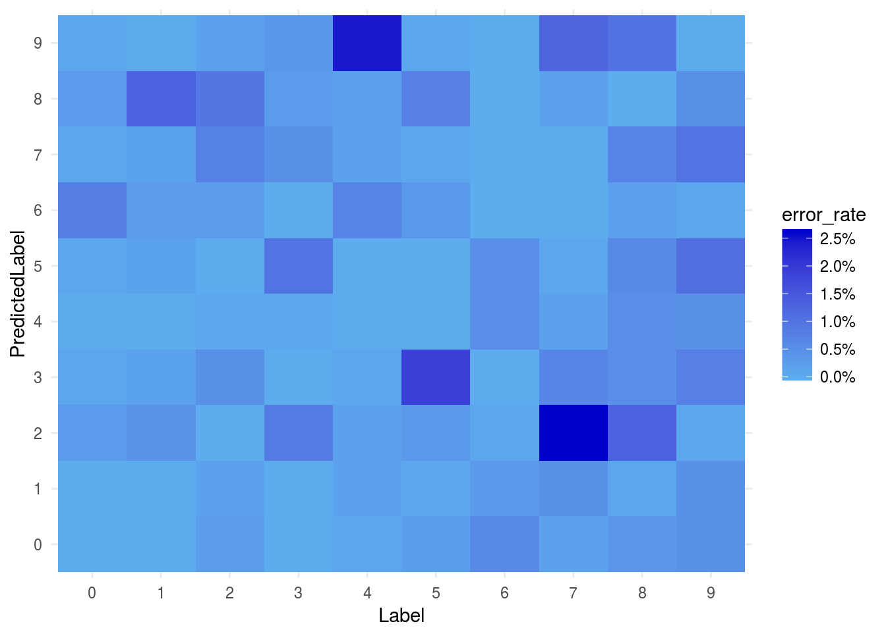
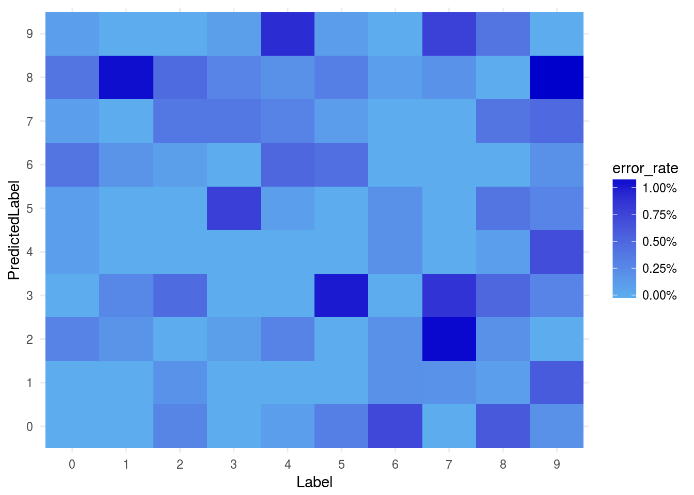
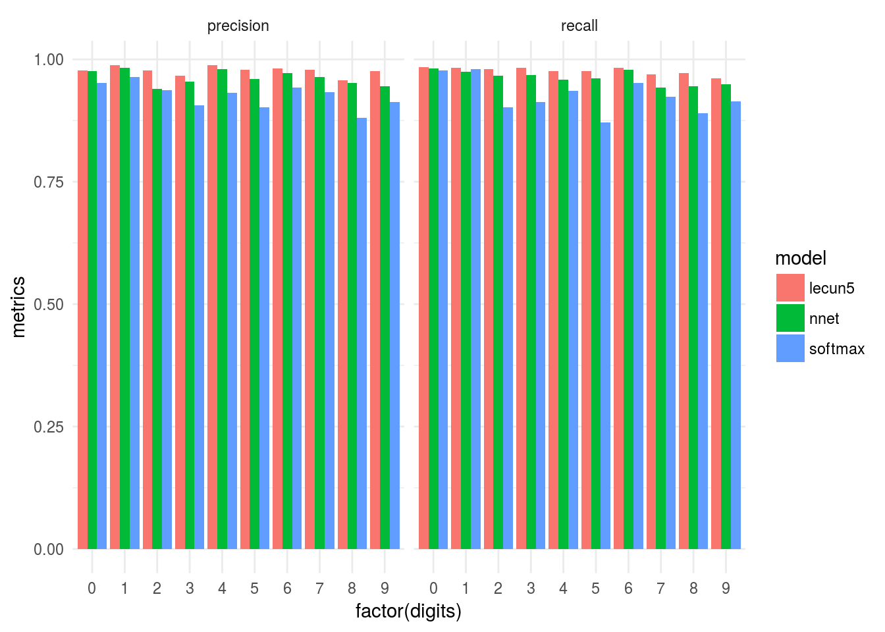

Chapter 5 Convolutional Neural Networks for Computer Vision
In the previous section we conducted multi-class classification using a softmax regression algorithm. The most popular approach for image classification is now convolutional neural networks. This module describes how to use convolutional networks.
MicrosoftML uses the Net# specification for defining neural network architectures. In the ../nnet directory, we have already created the specifications for you.
Examine the architecture in “MNIST.nn”. In this network, we have two convolutional layers and one fully connected layer.
library(tidyverse)
library(MicrosoftML)
theme_set(theme_minimal())
rxNeuralNetFile <- file.path("nnet/MNIST.nn")
nn <- readChar(rxNeuralNetFile, file.info(rxNeuralNetFile)$size)
nnet_fit <- rxNeuralNet(make_form(splits$train,
resp_var = "Label",
vars_to_skip = c("splitVar")),
data = splits$train,
type = "multiClass",
numIterations = 9,
netDefinition = nn,
initWtsDiameter = 1.0,
normalize = "No")## Not adding a normalizer.
## Using: SSE Math
## Loading net from:
## ***** Net definition *****
## const T = true;
## const F = false;
## input Picture [28, 28];
## hidden Convolve1 [5, 12, 12] from Picture convolve {
## InputShape = [28, 28];
## KernelShape = [5, 5];
## Stride = [2, 2];
## MapCount = 5;
## }
## hidden Convolve2 [50, 4, 4] from Convolve1 convolve {
## InputShape = [5, 12, 12];
## KernelShape = [1, 5, 5];
## Stride = [1, 2, 2];
## Sharing = [F, T, T];
## MapCount = 10;
## }
## hidden Full3 [100] from Convolve2 all;
## output Result [10] from Full3 all;
## ***** Reduced *****
## const T = true;
## const F = false;
## input Picture [28, 28];
## hidden Convolve1 [5, 12, 12] from Picture convolve {
## InputShape = [28, 28];
## KernelShape = [5, 5];
## Stride = [2, 2];
## MapCount = 5;
## }
## hidden Convolve2 [50, 4, 4] from Convolve1 convolve {
## InputShape = [5, 12, 12];
## KernelShape = [1, 5, 5];
## Stride = [1, 2, 2];
## Sharing = [false, true, true];
## MapCount = 10;
## }
## hidden Full3 100 from Convolve2 all;
## output Result 10 from Full3 all;
## ***** End net definition *****
## Input count: 784
## Output count: 10
## Output Function: SoftMax
## Loss Function: CrossEntropy
## PreTrainer: NoPreTrainer
## ___________________________________________________________________
## Starting training...
## Learning rate: 0.001000
## Momentum: 0.000000
## InitWtsDiameter: 1.000000
## ___________________________________________________________________
## Initializing 3 Hidden Layers, 82540 Weights...
## Estimated Pre-training MeanError = 4.142561
## Iter:1/9, MeanErr=1.582342(-61.80%), 610.87M WeightUpdates/sec
## Iter:2/9, MeanErr=0.651257(-58.84%), 615.72M WeightUpdates/sec
## Iter:3/9, MeanErr=0.474688(-27.11%), 626.65M WeightUpdates/sec
## Iter:4/9, MeanErr=0.390425(-17.75%), 627.81M WeightUpdates/sec
## Iter:5/9, MeanErr=0.344977(-11.64%), 620.60M WeightUpdates/sec
## Iter:6/9, MeanErr=0.314282(-8.90%), 613.83M WeightUpdates/sec
## Iter:7/9, MeanErr=0.290820(-7.47%), 611.50M WeightUpdates/sec
## Iter:8/9, MeanErr=0.273693(-5.89%), 616.90M WeightUpdates/sec
## Iter:9/9, MeanErr=0.256158(-6.41%), 631.15M WeightUpdates/sec
## Done!
## Estimated Post-training MeanError = 0.247149
## ___________________________________________________________________
## Not training a calibrator because it is not needed.
## Elapsed time: 00:01:24.7007751As in the previous section with linear classifiers, we can create our confusion matrices:
nnet_score <- rxPredict(modelObject = nnet_fit,
data = splits$test,
outData = tempfile(fileext = ".xdf"),
overwrite = TRUE,
extraVarsToWrite = "Label")## Elapsed time: 00:00:01.5443943Now that we have our scored results, let’s put them in a confusion matrix:
rxCube( ~ Label : PredictedLabel , data = nnet_score,
returnDataFrame = TRUE) -> nnet_scores_df
nnet_scores_df %>%
tbl_df %>%
group_by(Label) %>%
mutate(rate = Counts/sum(Counts)) %>%
mutate(error_rate = ifelse(Label == PredictedLabel,
0, rate)) %>%
ggplot(aes(x = Label, y = PredictedLabel, fill = error_rate)) +
geom_raster() +
scale_fill_continuous(low = "steelblue2", high = "mediumblue",
labels = scales::percent)
Just judging from the label it looks we have already done better than the linear classifier.
5.1 LeNet-5
Convolutional neural networks were popularized by Yann LeCun. In this section, we’ll fit his model from 1998, effectionately called LeNet-5.
The network differs from the previous implementation in that there are now more layers, but in between layers there is a pooling/sampling layer. This helps preventing the neural network from overfitting in between layers and allows for extracting higher-order representations from the data.
Because this neural network has significantly more weights to learn, it’ll take a while longer, especially if we aren’t using GPUs (which would give us at least 5-7x speed improvement). If you’re especially impatient, you can lower the numIterations parameter.
rxNeuralNetFile <- file.path("nnet/LeCun5.nn")
lecun <- readChar(rxNeuralNetFile, file.info(rxNeuralNetFile)$size)
system.time(lenet_fit <- rxNeuralNet(make_form(splits$train,
resp_var = "Label",
vars_to_skip = c("splitVar")),
data = splits$train,
type = "multiClass",
numIterations = 9,
netDefinition = lecun,
initWtsDiameter = 1.0,
normalize = "No"))## Not adding a normalizer.
## Using: SSE Math
## Loading net from:
## ***** Net definition *****
## const T = true;
## const F = false;
## input Picture [28, 28];
## hidden Convolve1 [6, 28, 28] from Picture convolve {
## Padding = T;
## InputShape = [28, 28];
## KernelShape = [5, 5];
## MapCount = 6;
## }
## hidden Subsample2 [6, 14, 14] linear from Convolve1 convolve {
## InputShape = [6, 28, 28];
## KernelShape = [1, 2, 2];
## Stride = [1, 2, 2];
## Sharing = [F, T, T];
## }
## hidden Convolve3 [16, 10, 10] from Subsample2 convolve {
## InputShape = [6, 14, 14];
## KernelShape = [6, 5, 5];
## MapCount = 16;
## }
## hidden Subsample4 [16, 5, 5] linear from Convolve3 convolve {
## InputShape = [16, 10, 10];
## KernelShape = [1, 2, 2];
## Stride = [1, 2, 2];
## Sharing = [F, T, T];
## }
## hidden Convolve5 [120] from Subsample4 convolve {
## InputShape = [16, 5, 5];
## KernelShape = [16, 5, 5];
## MapCount = 120;
## }
## hidden Full6 [84] from Convolve5 all;
## output Result [10] softmax from Full6 all;
## ***** Reduced *****
## const T = true;
## const F = false;
## input Picture [28, 28];
## hidden Convolve1 [6, 28, 28] from Picture convolve {
## Padding = true;
## InputShape = [28, 28];
## KernelShape = [5, 5];
## MapCount = 6;
## }
## hidden Subsample2 [6, 14, 14] linear from Convolve1 convolve {
## InputShape = [6, 28, 28];
## KernelShape = [1, 2, 2];
## Stride = [1, 2, 2];
## Sharing = [false, true, true];
## }
## hidden Convolve3 [16, 10, 10] from Subsample2 convolve {
## InputShape = [6, 14, 14];
## KernelShape = [6, 5, 5];
## MapCount = 16;
## }
## hidden Subsample4 [16, 5, 5] linear from Convolve3 convolve {
## InputShape = [16, 10, 10];
## KernelShape = [1, 2, 2];
## Stride = [1, 2, 2];
## Sharing = [false, true, true];
## }
## hidden Convolve5 120 from Subsample4 convolve {
## InputShape = [16, 5, 5];
## KernelShape = [16, 5, 5];
## MapCount = 120;
## }
## hidden Full6 84 from Convolve5 all;
## output Result 10 softmax from Full6 all;
## ***** End net definition *****
## Input count: 784
## Output count: 10
## Output Function: SoftMax
## Loss Function: CrossEntropy
## PreTrainer: NoPreTrainer
## ___________________________________________________________________
## Starting training...
## Learning rate: 0.001000
## Momentum: 0.000000
## InitWtsDiameter: 1.000000
## ___________________________________________________________________
## Initializing 6 Hidden Layers, 61816 Weights...
## Estimated Pre-training MeanError = 4.016721
## Iter:1/9, MeanErr=1.566115(-61.01%), 80.01M WeightUpdates/sec
## Iter:2/9, MeanErr=0.508592(-67.53%), 80.71M WeightUpdates/sec
## Iter:3/9, MeanErr=0.350416(-31.10%), 80.86M WeightUpdates/sec
## Iter:4/9, MeanErr=0.274144(-21.77%), 81.07M WeightUpdates/sec
## Iter:5/9, MeanErr=0.231398(-15.59%), 81.38M WeightUpdates/sec
## Iter:6/9, MeanErr=0.200124(-13.52%), 81.60M WeightUpdates/sec
## Iter:7/9, MeanErr=0.180827(-9.64%), 81.64M WeightUpdates/sec
## Iter:8/9, MeanErr=0.165253(-8.61%), 81.35M WeightUpdates/sec
## Iter:9/9, MeanErr=0.154163(-6.71%), 81.24M WeightUpdates/sec
## Done!
## Estimated Post-training MeanError = 0.140622
## ___________________________________________________________________
## Not training a calibrator because it is not needed.
## Elapsed time: 00:07:30.0053335## user system elapsed
## 0.040 0.000 450.133As before, let’s score our pretty model:
lescores <- rxPredict(modelObject = lenet_fit,
data = splits$test,
outData = tempfile(fileext = ".xdf"),
overwrite = TRUE,
extraVarsToWrite = "Label")## Elapsed time: 00:00:03.7402924and visualize our error rates:
rxCube( ~ Label : PredictedLabel , data = lescores,
returnDataFrame = TRUE) -> le_scores_df
le_scores_df %>%
tbl_df %>%
group_by(Label) %>%
mutate(rate = Counts/sum(Counts)) %>%
mutate(error_rate = ifelse(Label == PredictedLabel,
0, rate)) %>%
ggplot(aes(x = Label, y = PredictedLabel, fill = error_rate)) +
geom_raster() +
scale_fill_continuous(low = "steelblue2", high = "mediumblue",
labels = scales::percent)
Looks even better!
5.2 Model Metrics
While our visualizations provide some insight into our model’s improvement, let’s try to calculate empricial metrics of our models’ performacne.
The three metrics we’ll focus on are “accuracy”, “precision”, and “recall”. Accuracy simply measures how many of our estimates we classified correctly. While simple and intuitive, it does not account for class-imbalances. For example, if 99% of our data is in class A, and we simply use the rule that everything is class A, we’ll get an accuracy of 99%. Sounds impressive, but probably not going to win any Turing tests.
5.2.1 Accuracy
To calculate accuracy, we can simply measure the sum of our confusion matrix’s diagonal over all values. Our data was in a long format to make it amenable for visualizations using ggplot2. Here we’ll use tidyr to put it into a wide format amenable for calculating model metrics quickly and efficiently.
calc_accuracy <- function(scores_df) {
library(tidyr)
scores_df <- as.data.frame(scores_df)
scores_conf <- scores_df %>% spread(PredictedLabel, Counts)
scores_conf <- as.matrix(scores_conf[, 2:ncol(scores_conf)])
sum(diag(scores_conf))/sum(scores_conf)
}
sprintf("Accuracy of the softmax model is %s", calc_accuracy(softmax_scores_df))## [1] "Accuracy of the softmax model is 0.927"sprintf("Accuracy of the convolutional model is %s", calc_accuracy(nnet_scores_df))## [1] "Accuracy of the convolutional model is 0.9628"sprintf("Accuracy of the LeCun-5 model is %s", calc_accuracy(le_scores_df))## [1] "Accuracy of the LeCun-5 model is 0.977"5.2.2 Precision
Precision is another measure of model performance. It calculates the ratio of true positives to all values, i.e., how precise your model is in classifying any digit. To calculate precision, we’ll take the diagonal of our confusion matrix over the sum of that column.
calc_precision <- function(scores_df) {
library(tidyr)
scores_df <- as.data.frame(scores_df)
scores_conf <- scores_df %>% spread(PredictedLabel, Counts)
scores_conf <- as.matrix(scores_conf[, 2:ncol(scores_conf)])
diag(scores_conf)/colSums(scores_conf)
}
calc_precision(softmax_scores_df)## 0 1 2 3 4 5 6
## 0.9513406 0.9636049 0.9375629 0.9065880 0.9311044 0.9013921 0.9421488
## 7 8 9
## 0.9332024 0.8810976 0.91287135.2.3 Recall
Lastly, we can calculate recall. Recall is a measure of how relevant the predictions are for the given class, i.e., how many of the actual classes were properly predicted. In this case, we’ll sum over the predicted labels rather than the actual labels:
calc_recall <- function(scores_df) {
library(tidyr)
scores_df <- as.data.frame(scores_df)
scores_conf <- scores_df %>% spread(PredictedLabel, Counts)
scores_conf <- as.matrix(scores_conf[, 2:ncol(scores_conf)])
diag(scores_conf)/rowSums(scores_conf)
}
calc_recall(softmax_scores_df)## 1 2 3 4 5 6 7
## 0.9775510 0.9797357 0.9021318 0.9128713 0.9358452 0.8710762 0.9519833
## 8 9 10
## 0.9241245 0.8901437 0.91377605.2.4 Visualzing our Metrics
Let’s calculate the metrics for all three of our mdoels and visualize them.
results <- list(softmax = softmax_scores_df,
nnet = nnet_scores_df,
lecun5 = le_scores_df)
metrics_df <- data.frame(
map_df(results, calc_precision),
digits = 0:9,
metric = rep("precision", 10)
) %>%
bind_rows(data.frame(
map_df(results, calc_recall),
digits = 0:9,
metric = rep("recall", 10))
)## Warning in bind_rows_(x, .id): Unequal factor levels: coercing to character## Warning in bind_rows_(x, .id): binding character and factor vector,
## coercing into character vector
## Warning in bind_rows_(x, .id): binding character and factor vector,
## coercing into character vectormetrics_df %>% gather(model, metrics, -digits, -metric) %>%
ggplot(aes(x = factor(digits),
y = metrics,
fill = model)) +
geom_bar(stat = 'identity', position = "dodge") +
facet_wrap(~metric) + theme_minimal()